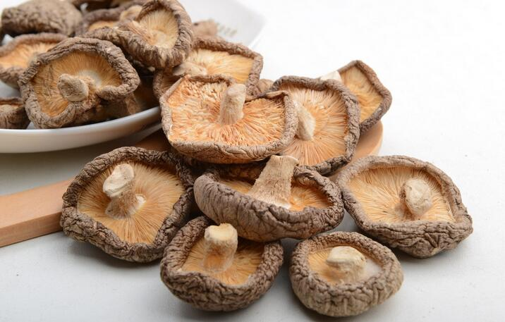
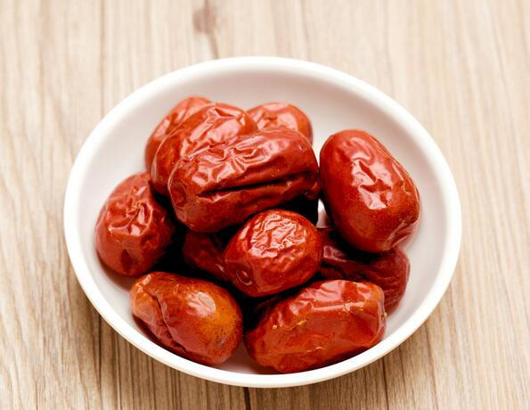
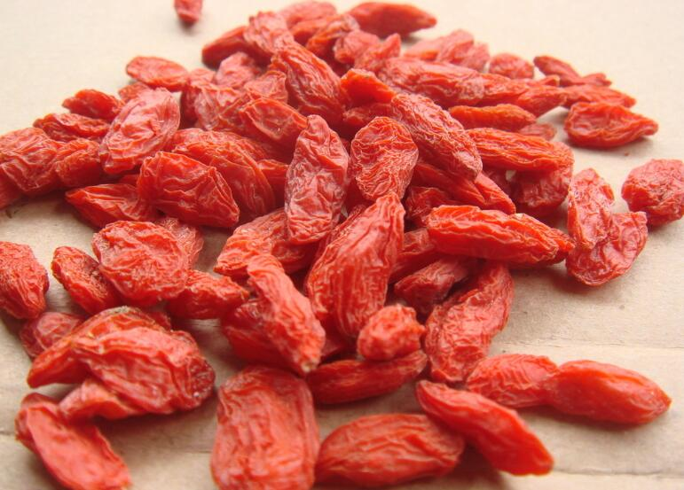

1、香菇具有高蛋白、低脂肪、多糖、多种氨基酸和多种维生素的营养特点；
2、香菇中有一种一般蔬菜缺乏的麦淄醇，它可转化为，促进体内钙的吸收，并可增强人体抵抗疾病的能力。正常人吃香菇能起到防癌作用。癌症患者多吃香菇能抑制肿瘤细胞的生长；
3、香菇食疗对香菇中含腺瞟吟、胆碱、酪氨酸、氧化酶以及某些核酸物质，能起到降压、降胆固醇、降血脂的作用，又可预防动脉硬化、肝硬化等疾病；
4、香菇多糖能提高辅助性t细胞的活力而增强人体体液免疫功能。大量实践证明，香菇防治癌症的范围广泛，已用于临床治疗。香菇还含有多种维生素、矿物质，对促进人体新陈代谢，提高机体适应力有很大作用。
香菇（干）适合人群：
一般人群均可食用。
1、贫血者、抵抗力低下者、高血脂患者、高血压患者、动脉硬化患者、糖尿病患者、癌症患者、肾炎患者食用；
2、脾胃寒湿气滞或皮肤骚痒病患者忌食。
香菇（干）食疗作用：
香菇性平、味甘，人肝、胃经；
有补肝肾、健脾胃、益气血、益智安神、美容颜之功效；
有化痰理气，益胃和中，托疹解毒的功效；
主治食欲不振，身体虚弱，小便失禁，大便秘结，形体肥胖，肿瘤疮疡等病症。

小枣（干）营养分析：
1、枣能提高人体免疫力，并可抑制癌细胞，药理研究发现，
2、经常食用鲜枣的人很少患胆结石，这是因为鲜枣中丰富的维生素c，使体内多余的胆固醇转变为胆汁酸，胆固醇少了，结石形成的概率也就随之减少；
3、枣中富含钙和铁，它们对防治骨质疏松产贫血有重要作用，中老年人更年期经常会骨质疏松，正在生长发育高峰的青少年和女性容易发生贫血，
4、枣对病后体虚的人也有良好的滋补作用；
5、枣所含的芦丁，是一种使血管软化，从而使血压降低的物质，对高血压病有防治功效；
6、枣还可以抗过敏、除腥臭怪味、宁心安神、益智健脑、增强食欲。
小枣（干）补充信息：
1、好的红枣皮色紫红，颗粒大而均匀，果行短壮圆整，皱纹少，痕迹浅。如果皱纹多，痕迹深，果行凹瘪，则属于肉质差和未成熟的鲜枣制成的干品。如果红枣蒂端有穿孔或粘有咖啡色或深褐色粉末，说明已被虫蛀；
2、干小枣每百克的能量、蛋白质、糖及其他的营养素比鲜枣高；
3、枣子吃多了会涨气，孕妇如果有腹胀现象就不要吃枣了，如果只喝红枣汤就不要紧。
小枣（干）适合人群：
一般人群均可食用
1、中老年人、青少年、女性尤宜食用；
2、有宿疾者、脾胃虚寒者、牙病患者、便秘患者应慎食。
小枣（干）食疗作用：
枣味甘、性平，入脾、胃经；
具有补益脾胃，滋养阴血，养心安神，缓和药性的功效；
主治脾胃虚弱，食少便溏，气血亏损，体倦无力，面黄肌瘦，妇女血虚脏躁，精神不安等症。

枸杞中的维生素c含量比
枸杞一年四季皆可服用，夏季宜泡茶，但以下午泡饮为佳，可以改善体质，利于睡眠。但要注意的是，冬季枸杞宜煮粥，它可以和各种粥品搭配，枸杞炖羊肉也是很适合冬天食用的。家常炒菜加入枸杞后口感颇佳，如枸杞炒
枸杞子亦为扶正固本，生精补髓、滋阴补肾、益气安神、强身健体、延缓衰老之良药，对慢性肝炎、中心性视网膜炎、视神经萎缩等疗效显著；对抗肿瘤、保肝、降压、以及老年人器官衰退的老化疾病都有很强的改善作用。作为滋补强壮枸杞照片集锦（17张）剂治疗肾虚各症及肝肾疾病疗效甚佳，能显著提高人体中血浆睾酮素含量，达到强身之功效。现代医学研究表明，枸杞对体外癌细胞有明显的抑制作用，可用于防止癌细胞的扩散和增强人体的免疫功能
枸杞虽然具有很好的滋补和治疗作用，但也不是所有的人都适合服用的。由于它温热身体的效果相当强，正在感冒发烧、身体有炎症、腹泻的人最好不要吃。
功能主治：治肝肾阴亏，益精明目。用于虚劳精亏，腰膝酸痛，眩晕耳鸣，阳痿遗精，内热消渴，血虚萎黄目昏不明。